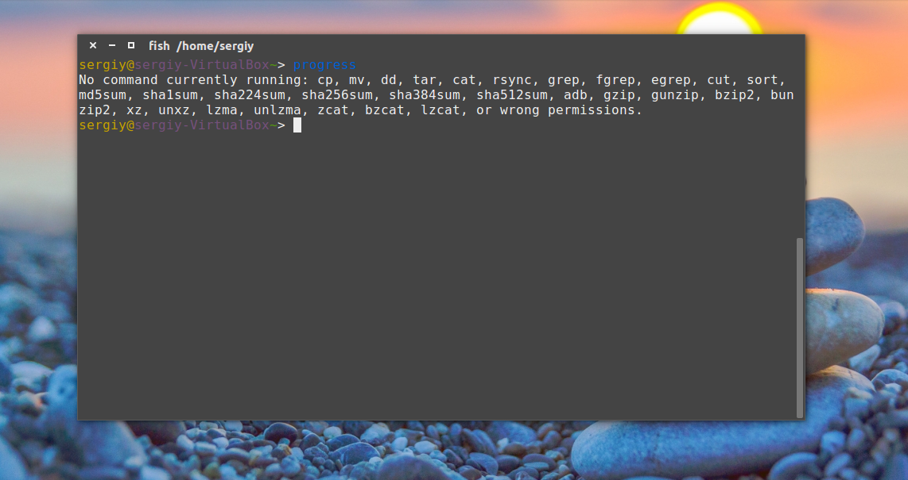
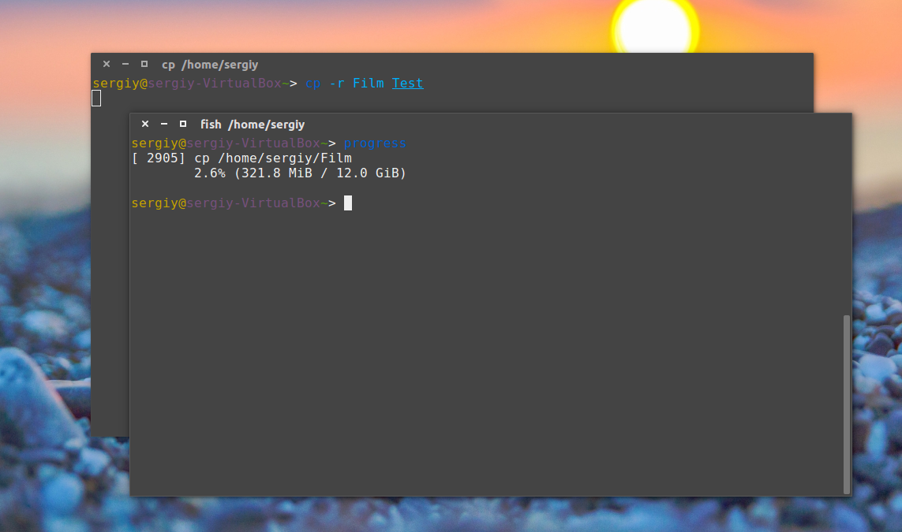
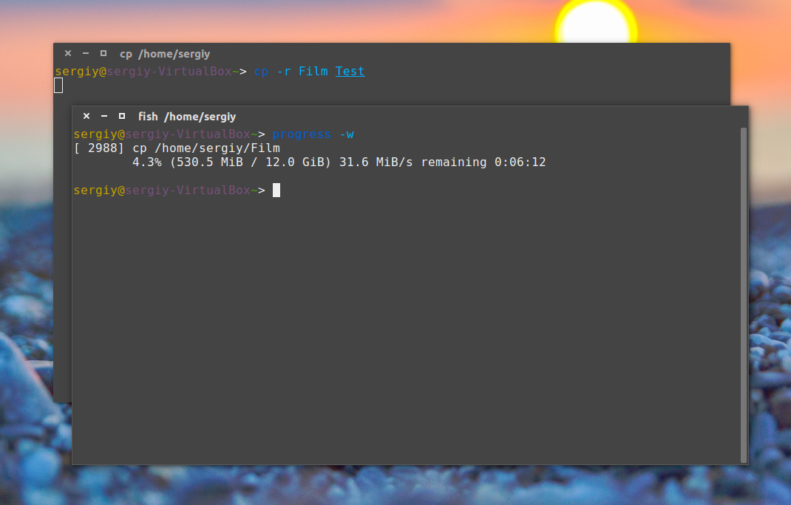
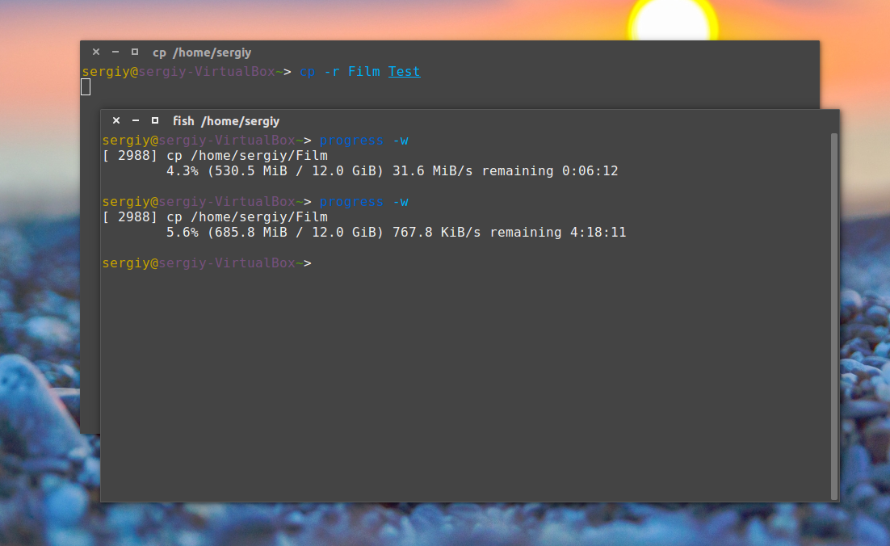
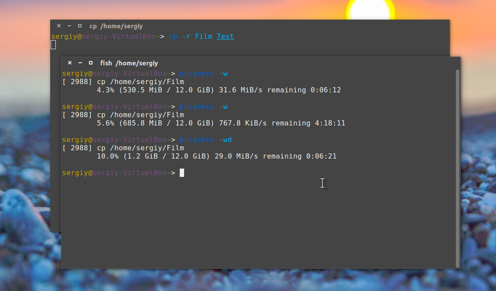
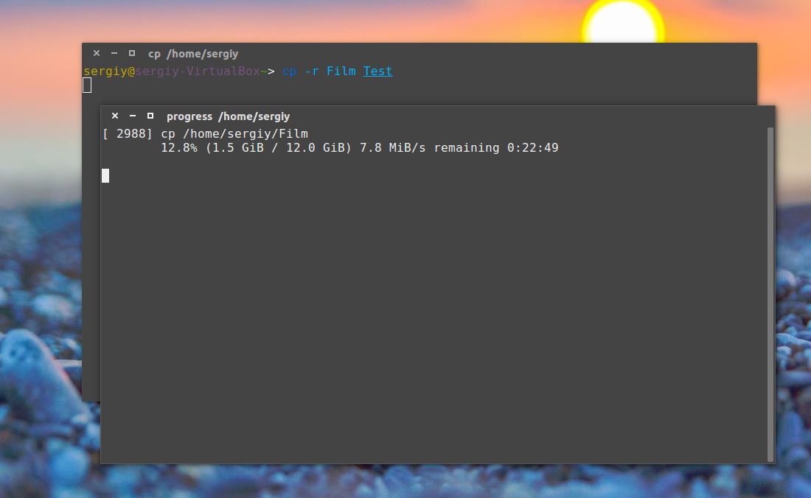

Как посмотреть прогресс dd Linux
Инструкции Обновлено: 20 мая, 2020 4 admin
Если вы пользователь Linux то часто используете команды, которые выполняются некоторое время, например, команда копирования файлов cp, распаковка архивов с помощью tar, перемещение файлов в mv, конвертирование и копирование файлов с помощью dd. Прогресс выполнения команды нужен чтобы приблизительно оценить время до завершения выполнения задачи, или просто чтобы убедиться что все работает и утилита не зависла.
Однако команда dd, как известно, при копировании файла не отображает прогресс бар для пользователя, поэтому непонятно сколько процентов файлов уже скопировано.
В этой статье мы рассмотрим как посмотреть прогресс dd в linux, этот метод подходит не только для dd, но и для всех подобных ей утилит.
Но есть очень простое решение, и даже два. Первое, это утилита Coreutils Viewer или progress (раньше известная как cv). Программа написана на С и ищет выполняемые в данный момент в системе программы такие как: mv, cp, dd, tar, unzip и т д и отображает процент скопированных данных. Второе, более интересное. Мы можем направить данные через туннель pv, который будет считать с какой скоростью они передаются и сколько еще осталось. Рассмотрим сначала первый способ.
Прогресс команды Linux с помощью progress
Эта утилита не поставляется с системой по умолчанию. Но установить ее очень просто, программа есть в официальных репозиториях большинства дистрибутивов. Например, в Ubuntu:
sudo apt install progress
В других дистрибутивах она может быть более старой версии и назваться cv. Также вы можете собрать программу из исходников. Единственная зависимость - библиотека ncurces. В Ubuntu 16.04 ее можно установить такой командой:
sudo apt-get install libncurses-dev
В прежних версиях Ubuntu:
sudo apt-get install ncurses-dev
В Fedora и CentOS:
sudo yum install ncurses-devel
Когда удовлетворите зависимости утилиты, выполните следующую команду для загрузки исходников с GitHub:
wget https://github.com/Xfennec/progress/archive/v0.13.zip
Затем распакуйте полученный архив:
unzip v0.13.zip
Измените текущий каталог с помощью cd:
cd progress
Запустите сборку и установку:
sudo make
sudo make install
Программа готова к работе.
Смотрим прогресс команды с помощью progress
После завершения установки запустите progress следующей командой:
progress
В результате получится что-то вроде:

Теперь давайте запустим копирование видео из папки на рабочий стол и посмотрим что произойдет:
cp Film ~/Фильмы/
Команда progress покажет прогресс копирования cp:

Выполним progress еще раз:
Как видите, утилита показывает информацию о прогрессе копирования файла, процент скопированных данных, количество скопированных данных и общий размер файла. Это очень полезно при копировании больших файлов, например, при копировании фильмов или образов дисков. То же самое будет если запустить dd, mv, tar, zip или другую подобную утилиту.
В утилиты есть много полезных опций. Опция -w заставляет программу показывать время, оставшееся до окончания операции:
progress -w

И еще раз:

Если вы хотите видеть упрощенный вывод без дополнительных сообщений используйте опцию -q. И наоборот для показа всех предупреждений и ошибок воспользуйтесь -d. Например, лучше использовать cv со следующими опциями:
progress -wd

Вы можете отслеживать состояние процесса пока он запущен:
progress -m

Если вы хотите постоянно наблюдать за прогрессом всех команд используйте опцию -М:
progress -M
Или ее эквивалент:
watch progress
Очень популярный вот такой вариант:
progress -wM
Или:
watch progress -w
Также можно посмотреть прогресс linux только нужной программы, например, прогресс загрузки файла в firefox:
watch progress -wc firefox
Или проверить активность web-сервера:
progress -c httpd
Способ второй - создание туннеля
То, что мы рассмотрели выше - не единственный способ посмотреть прогресс команды linux. Еще есть утилита pv. Она намного проще и выполняет только одну задачу - считает все данные проходящие через нее. Может читать поток из файла или стандартного ввода.
Поэтому ее можно использовать чтобы посмотреть прогресс выполнения команды в Linux. Например, создадим такой туннель для dd:
dd if=/dev/zero | pv | dd of=/file
Здесь мы выдаем содержимое нужного нам файла на стандартный вывод, передаем утилите pv, а затем она отдает его другой утилите, которая уже выполняет запись в файл. Для cp такое сделать не получиться, но мы можем поступить немного по-другому:
pv /ваш_файл | cat > новый_файл
Готово, здесь мы тоже получим прогресс команды копирования.
Чтобы использовать всю мощь Linux пользователям часто приходится работать в командной строке. Чаще всего мы смотрим содержимое, копируем файлы, распаковываем архивы. В этой инструкции мы рассмотрели утилиту process, которую можно использовать для просмотра прогресса dd и других системных команд.
Мне всегда было интересно посмотреть прогресс копирования cp для больших файлов. Честно говоря, я часто имею дело с большими файлами при просмотре фильмов на своем ноутбуке.
Похожие записи:
Нет похожих записей